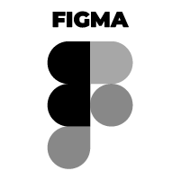

ABOUT ME
Detail-oriented Graphic Designer with extensive experience in visually communicating ideas and enhancing brand identity across multiple platforms. Skilled in editing product images for e-commerce platforms, designing infographics, and creating compelling visuals for social media. Recently expanded skillset through a Full-Stack Development Bootcamp, combining technical expertise in HTML, CSS, and JavaScript with mastery of design tools such as Photoshop, Illustrator, and InDesign. Bilingual in English and Spanish, enabling effective collaboration in international environments and efficient project management across diverse teams.
Passionate about continuous learning and constant improvement, I always strive to stay up-to-date with the latest trends and best practices in web development. I am eager to collaborate in multidisciplinary teams and contribute my technical and creative skills to achieve project goals. Let's connect and explore new opportunities in the web development world together!
PROFESSIONAL SKILLS
-
Graphic Design: Over 20 years of experience in design and development, ensuring high quality and precision in every project.
-
Frontend Development: Creating web interfaces with HTML, CSS, and JavaScript, merging graphic design with web development.
-
 Prototyping and UI Design: Proficient in Figma for designing interfaces and prototypes.
Prototyping and UI Design: Proficient in Figma for designing interfaces and prototypes. -
Full Stack Development: Experience with React.js, JavaScript, Node.js and CSS for developing complete web applications.
-
 Photo Retoucher: Specializing in image retouching and editing with Photoshop and Wacom tablet.
Photo Retoucher: Specializing in image retouching and editing with Photoshop and Wacom tablet. -
 Version Control: Familiar with Git and GitHub for version management and project collaboration.
Version Control: Familiar with Git and GitHub for version management and project collaboration.
TECHNICAL SKILLS
IMAGE EDIT, RETOUCH AND DESIGNS


BRANDS DEMOCRACY
Brands Democracy is a retailer specializing in luxury and high-quality lifestyle products, offering accessible pricing to broaden the appeal of premium items.
To establish its identity, the brand embraced the concept of "freedom of choice," empowering customers to select luxury items without financial barriers. This ethos was inspired by the principles of liberty and equality, drawing visual and symbolic inspiration from the logos of U.S. political parties, blending the themes of accessibility and aspirational living.


C 0%
M 12%
Y 98%
K 0%
C 100%
M 82%
Y 32%
K 17%
C 6%
M 4%
Y 5%
K 0%
R 255
G 220
B 0
R 35
G 58
B 107
R 243
G 243
B 243
This concept of using a fist tattooed with luxury brands is a bold and striking visual metaphor for empowerment and choice, aligning perfectly with the brand's identity. The tattoos symbolize ownership and the democratization of luxury, which ties into the idea of making premium items accessible to all.
The fist, as a universal symbol of strength and solidarity, further reinforces the message of freedom and choice. The design effectively communicates the brand ethos and resonates with a broad audience.


DAVID BRITO - REFLEJOS
David Brito, an accomplished jazz bassist, envisioned the artwork for his trifold CD, Reflejos, as an emotional and symbolic representation of his music’s purpose. The project is dedicated to the countless Venezuelans who have left their homeland, seeking a better future in distant corners of the world. Through his music, David reflects their stories of struggle, nostalgia, and hope.
To capture this profound sentiment, I designed the cover with two contrasting visual elements:
Neutral tones dominate the primary image, representing the melancholy and sadness of leaving one’s home, family, and familiar surroundings behind. These tones evoke the emotional weight of displacement and the longing for what once was.
Vibrant colors in the reflection signify the brighter future and the hope that drives this journey. This reflection symbolizes optimism, resilience, and the pursuit of better opportunities for oneself and loved ones. The cover art serves as a mirror of the emotions that David’s music embodies: a blend of sorrow and aspiration, rooted in the stories of those who carry their heritage with them while building a new life elsewhere.
To establish its identity, the brand embraced the concept of "freedom of choice," empowering customers to select luxury items without financial barriers. This ethos was inspired by the principles of liberty and equality, drawing visual and symbolic inspiration from the logos of U.S. political parties, blending the themes of accessibility and aspirational living.

CONTACT
If you are looking for a web developer, graphic designer, or photo retoucher, contact me at: anamgarcia.a@yahoo.com